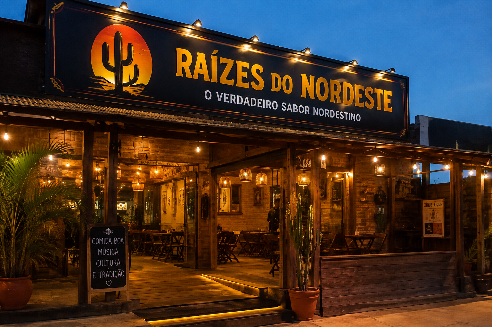

.png)
.png)


SOBRE NÓS
Conheça o Raízes do Nordeste

Nossa História
O Raízes do Nordeste nasceu de um sonho simples: levar até cada cliente o sabor, a alegria e a tradição da culinária nordestina. Inspirado nas receitas, temperos e sabores marcantes do Nordeste brasileiro, o restaurante foi criado para transformar cada refeição em uma experiência especial.
Começamos com o desejo de oferecer alimentos preparados com carinho, utilizando ingredientes selecionados e buscando sempre manter a qualidade em cada detalhe. Nosso cardápio reúne opções para todos os momentos, desde hambúrgueres e porções até bebidas, sobremesas e combos.
Mais do que servir comida, queremos criar momentos. Cada pedido representa uma oportunidade de compartilhar um pouco da cultura nordestina e proporcionar uma experiência saborosa e acolhedora.
Hoje, o Raízes do Nordeste continua crescendo com o mesmo propósito que deu origem ao projeto: levar sabor, qualidade e tradição para cada cliente, em cada pedido.
NOSSA MISSÃO
Conheça a missão da Raízes do Nordeste
Nossa Missão
Nossa missão é levar até nossos clientes uma experiência que vá muito além de uma simples refeição. No Raízes do Nordeste, buscamos valorizar a riqueza da cultura nordestina por meio de sabores marcantes, receitas inspiradas na tradição e ingredientes cuidadosamente selecionados.
Queremos que cada pessoa que escolha o nosso restaurante se sinta acolhida e tenha uma experiência especial desde o momento em que realiza o pedido até a última mordida. Por isso, trabalhamos para oferecer produtos saborosos, preparados com cuidado e atenção a cada detalhe.
Também acreditamos que a qualidade está presente em todos os momentos: no atendimento, na preparação dos alimentos, na apresentação dos pratos e na busca constante pela satisfação de nossos clientes.
Nosso propósito é manter viva a essência do Nordeste, apresentando seus sabores de uma maneira moderna, acessível e especial. Queremos conquistar nossos clientes não apenas pela comida, mas também pelo carinho, pela dedicação e pela experiência que proporcionamos.
Levar sabor, qualidade e tradição para cada cliente, em cada pedido. Esse é o compromisso do Raízes do Nordeste.
Atendimento
Funcionarios treinados e qualifacados para melhor lhe atender
Qualidade
Ingredientes
selecionados
Tradição
Receitas que
valorizam nossa
cultura
Sabor
O verdadeiro
sabor do
Nordeste
O QUE OFERECEMOS